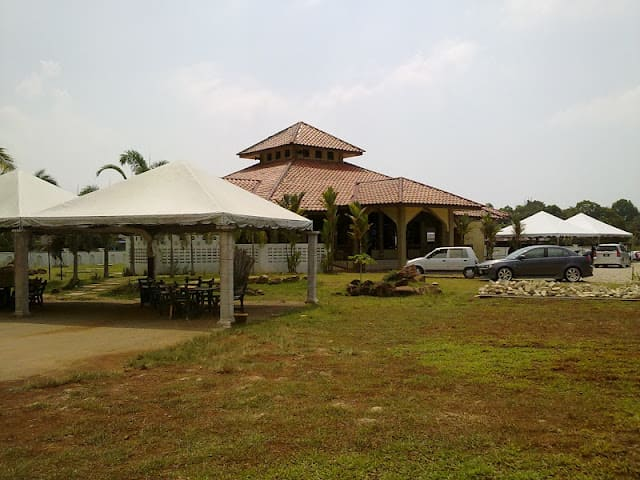
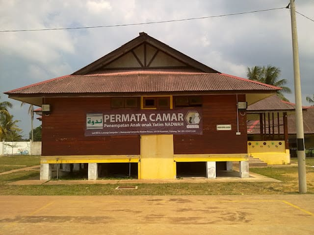
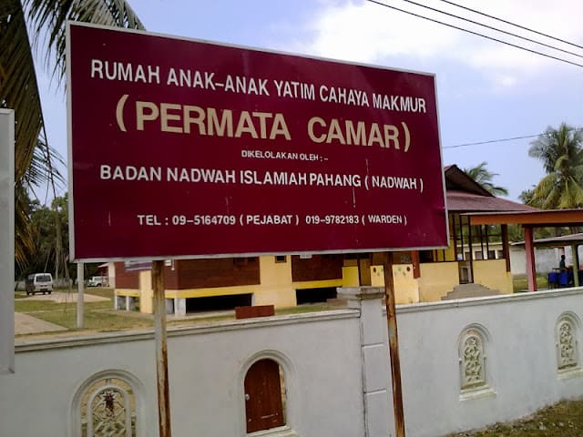
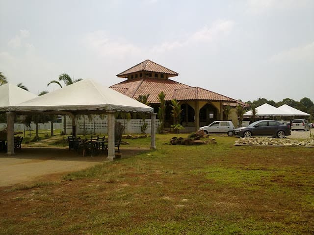
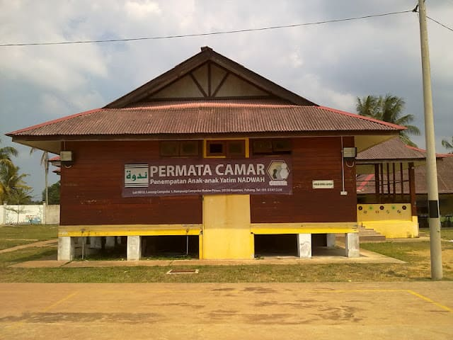
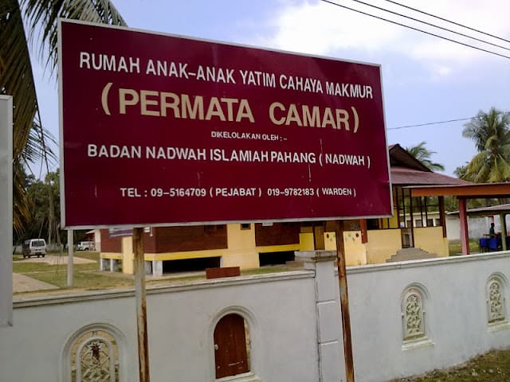

Our Gallery
 





Background
Rumah Permata Camar was initiated by Badan Nadwah Islamiah Pahang (NADWAH) in 2002 as part of its welfare-based outreach programme known as dakwah bil hal. The home officially began its operations on 28 February 2004 with only five children housed in rented semi-detached homes in Kuantan, Pahang.
Through continuous public support, donations, and land endowments, Rumah Permata Camar has grown steadily. In 2014, the organisation was officially registered as an independent welfare body, allowing more structured administration and effective management.
Vision
To provide complete residential facilities for orphans and underprivileged children in order to shape morally upright, independent, and responsible Muslim individuals.
Iltizam
Corakan Anak Mengikut Ajaran Rasullullah S.A.W
Mission
- ● To develop a fully equipped and comfortable residential complex
- ● To nurture children with strong Islamic values and noble character
- ● To provide comprehensive education for independent living
Our Commitment
Rumah Permata Camar is committed to shaping children according to the teachings of Prophet Muhammad S.A.W, emphasising moral values, discipline, responsibility, and compassion in everyday life.
Meaning Behind the Rumah Anak Yatim Logo
The logo of Rumah Anak Yatim carries deep meaning that reflects the organization’s mission and values:
- Dome Shape:The dome shape is synonymous with a mosque, symbolizing the aspiration to nurture true Muslims with noble character.
- Two Domes: Representing the key foundation in shaping these children according to the teachings of the Prophet Muhammad, particularly the Qur'an and Hadith. The two domes also symbolize the organization's role in providing shelter, guidance, and education to the children.
- Main Colors: Maroon and Gold:The primary color, Maroon, represents spirit, effort, and love. Combined with Gold, it symbolizes generosity, divinity, achievement, and success.
- Figura Shape:The figure in the logo, highlighted in maroon with a contrasting space in the center, represents learning, character development, dawah, and the cultivation of leadership, responsibility, and self-reliance.
- Text: CAMAR and Jawi:The combination of "CAMAR" and Jawi text beneath it forms a key identity element, symbolizing the organization’s role in both physical and spiritual development.